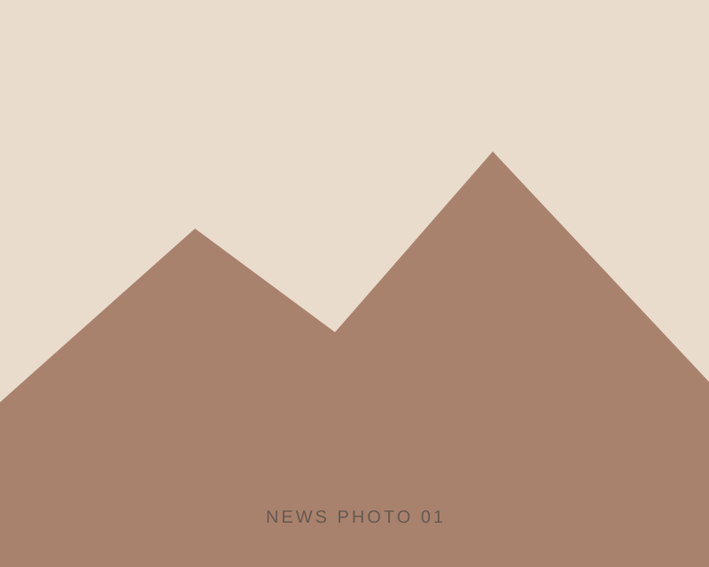
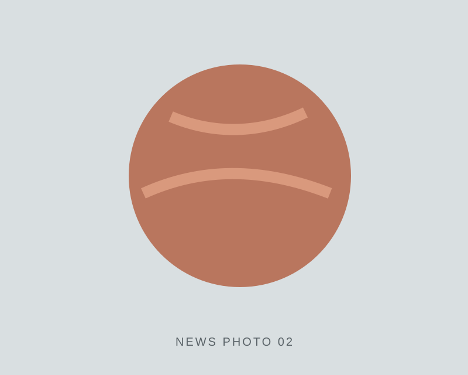
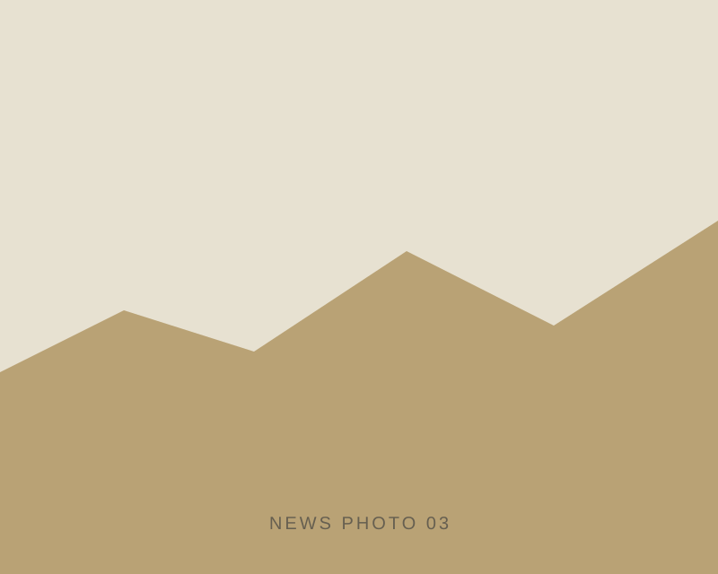

ダヌンツィオ大学を訪問しました
小松吾郎博士の研究室を訪問しました。

ACTIVITY LOG
研究活動・発表・フィールド調査の記録です。

小松吾郎博士の研究室を訪問しました。

Caltech で開催された国際火星会議に参加しました。

火星河川地形アナログの現地調査を行いました。
イタリア・ダヌンツィオ大学国際惑星科学研究大学院の小松吾郎博士の研究室に訪問しました。
第10回国際火星会議 @ Caltech でポスター発表しました。
高知大学の長谷川精博士、ダヌンツィオ大学の小松吾郎博士ほかとの共同研究でアメリカ中西部を調査しました。
フランス・ナント大学 Laboratoire de Planétologie et Géosciences に研究留学しました。
モンゴルで火星周氷河地形アナログの現地調査を行いました。